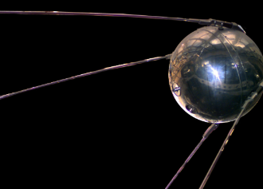
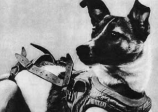

These are the very first successful earth orbits that paved the way for other successful launches.
ㅤ ㅤㅤㅤㅤㅤㅤㅤㅤㅤㅤㅤㅤㅤㅤㅤㅤㅤㅤㅤㅤㅤㅤㅤㅤㅤㅤㅤㅤ
First Satellite object in Orbit- Sputnik 1
Sputnik 1 was the very first man-made satellite. On October 4, 1957, it was successfully launched into low earth orbit. It stayed in contact with the systems on Earth for three weeks before its battery ran out. It fell back through Earth’s atmosphere two months later.
The launch of this satellite caused the start of the Space Race between the US and USSR. It orbited the earth for three months, and orbited for 1,440 times!
Right after this achievement, the Soviet Union also announced the start of the “Space Age”.
First Animal in Orbit- Laika
Sputnik 2 was the successor of Sputnik 1. They wanted to try to put a living being into orbit to see the possible effects that it could have on humans. The interior of Sputnik 2 was designed like an animal habitat, which was made for a dog named Laika to live in.
The problem was, due to lack of development time for the rocket, they did not design an environmental control system for it, which meant that Laika only survived for around three hours after the rocket got into orbit. Her cause of death was speculated to be the extremely high temperatures or suffocation. The batteries used for communication eventually ran out, and the satellite burned up in the earth's atmosphere.
This is an example of a very great achievement (putting a living thing into orbit), and something to be ashamed of (the dog died).
The Soviet Union would later put more animals into orbit, but this time returning them to earth safely.
First Human in Orbit- Yuri Gagarin:
Yuri Alekseyevich Gagarin is known to be the first human to complete a single Earth orbit. This was a very great achievement, considering that the Space Race was going on at that time. His first (and only) spaceflight was aboard the Vostok 1. He was proclaimed as a ‘national hero’ and was prevented from flying by officials for fear that he would be killed.
He died while training on a MiG-15 jet, five weeks later.